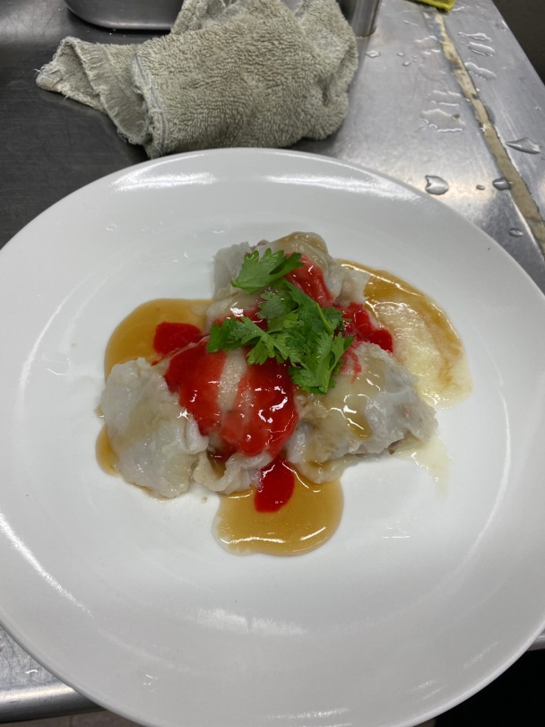

目錄
炒鱔魚意麵
紅燒蝦仁羹
學習心得
清蒸肉圓
絞肉剁細用擦手紙吸乾水分
醃製：油蔥酥（切碎）2匙，五香粉、甘草、胡椒粉1/8匙，醬油、鹽巴1/4匙，糖1/2匙攪拌後再加入蛋液1大匙攪拌後，加入水、米酒1.5大匙，太白粉1匙攪拌後加入白表粒
1.水210g，再來米粉60g打勻中小火煮至糊化攪拌後不會垂掉即可冷卻後下糯米粉30g，地瓜粉40g慢慢攪拌慢慢下，若太乾可加一點常溫水用小碗抹一層麵糊放肉在上麵糊用水塑形
種火蒸15分關火燜5分
醬汁：醬油膏2.5匙，100g水，糖2匙，味精1/4匙，醬油、太白粉1匙攪拌煮滾
